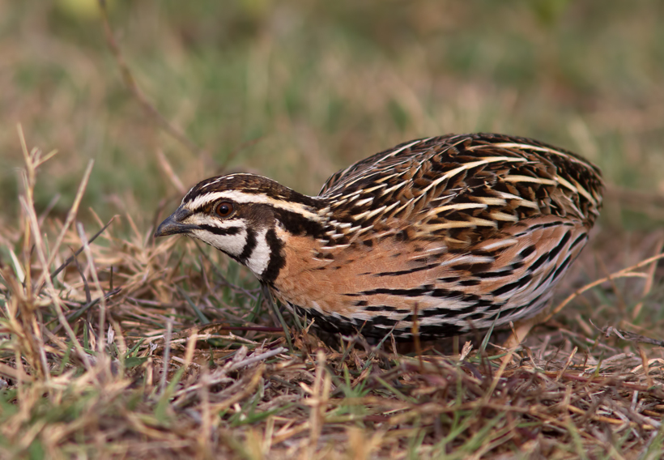

Coturnix coromandelica
The Rain Quail lacks barring on primaries. The male has a black breast-patch and distinctive head pattern of black and white. The female is difficult to distinguish from female common and Japanese Quail, although the spots on the breast are more delicate. They eat mainly the seeds of grasses and other plants, insect larvae and small invertebrates.